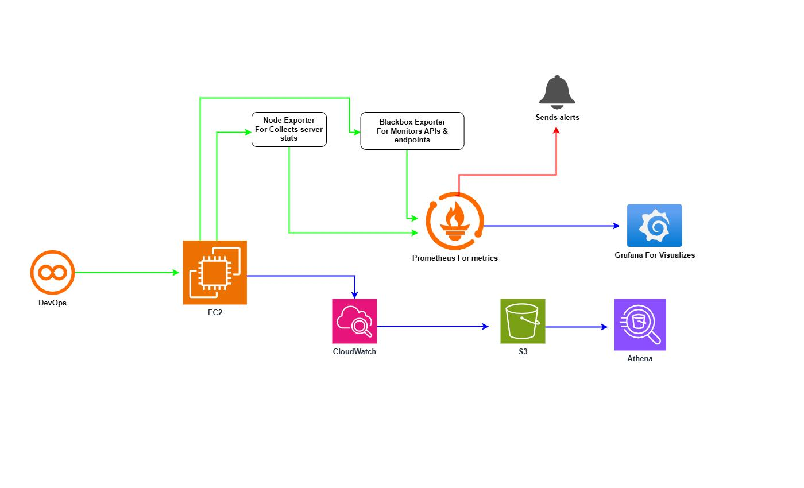
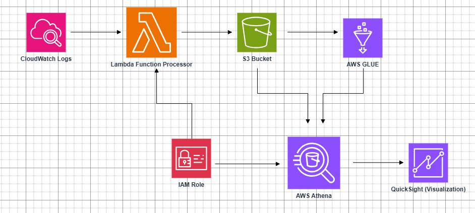
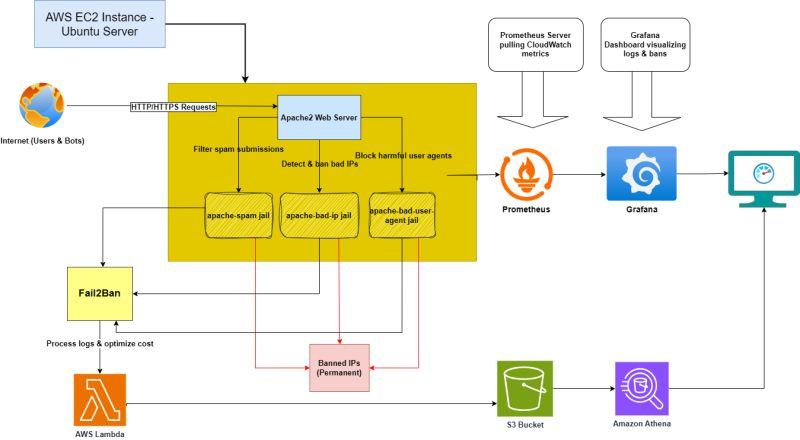
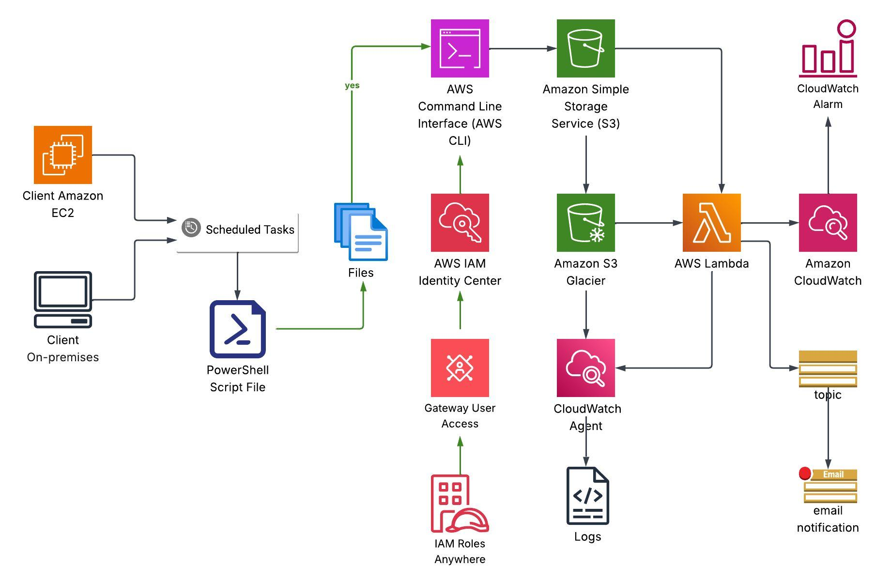
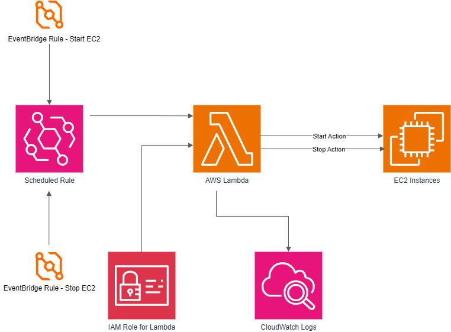

Hi, I'm
Piyush Chaudhari
DevOps Engineer |
Automating CI/CD pipelines, managing cloud infrastructure, and improving system reliability with a passion for resilient architecture.
About Me
I am a dedicated DevOps Engineer with over 2 years of hands-on experience in streamlining development lifecycles and managing cloud environments. (1.5+ years of intense focus across all major DevOps domains).
I specialize in containerization, Infrastructure as Code (IaC), and advanced monitoring solutions. My core expertise lies in configuring tools like Docker, Kubernetes, Terraform, Ansible, Jenkins, and architecting resilient solutions on AWS and other cloud platforms.
Technical Skills
CI/CD & Automation
Jenkins, GitHub Actions
Containers & Orch.
Docker, Kubernetes
IaC & Config
Terraform, Ansible
Cloud Platforms
AWS (Lambda, EC2, S3), Azure, GCP
Scripting & OS
Python, Shell, Linux (Ubuntu, CentOS)
Monitoring
Prometheus, Grafana, ELK Stack
Stack Expertise
Cloud & Infrastructure
DevOps & Automation
Scripting & OS
Monitoring & Security
Experience
DevOps Engineer
Pinga Sol (AWS Hosted) | 2024 – Present
- Designed and implemented event-driven automation using AWS EventBridge and Lambda to schedule EC2 start/stop operations, reducing idle infrastructure costs by up to 40%.
- Built a scalable observability stack using Prometheus, Grafana, Node Exporter, and Blackbox Exporter to monitor system health and infrastructure metrics in real time.
- Developed a centralized logging pipeline (CloudWatch → Lambda → S3 → Athena) to filter logs efficiently, reducing costs and enabling serverless analytics.
- Engineered log processing automation with AWS Lambda to eliminate unnecessary logs, optimizing storage and improving query performance in Athena.
- Implemented real-time alerting systems using Prometheus alerts and CloudWatch alarms to proactively detect infrastructure issues.
- Designed and deployed secure IAM roles and policies following least privilege principles for Lambda, EC2, and data pipeline services.
- Built API and endpoint monitoring using Blackbox Exporter, improving system reliability and uptime tracking.
- Integrated Grafana dashboards for visualizing metrics, logs, and system performance, enhancing operational visibility.
- Automated CI/CD pipelines using Jenkins and Docker to streamline build and deployment processes for applications.
- Implemented Fail2Ban-based security mechanisms to detect and block malicious IPs, reducing spam and unauthorized access.
- Developed log-based threat detection systems to identify suspicious requests and automatically trigger mitigation actions.
- Optimized AWS architecture by combining S3, Athena, and Glue for cost-efficient data storage and querying.
- Configured CloudWatch log streaming and monitoring with alerting to ensure system reliability and faster incident response.
- Reduced manual intervention by automating infrastructure workflows using serverless and scripting solutions.
Associate DevOps Engineer
Blue Planet InfoSolutions | 2023 – 2024
- Supported CI/CD pipelines and authored automation scripts in Bash/Python.
- Assisted in cloud provisioning with Terraform and configuration via Ansible.
- Performed Linux server administration, ensuring 99.9% uptime.
- Created scripts for build automation, reducing deployment errors by 15%.
Key Projects
Full Observability Stack
Stack: Prometheus + Grafana + Node Exporter + Blackbox Exporter
Monitors server health, APIs, and uptime with a real-time alerting system for proactive incident management.
Log Processing & Cost Reduction
Architecture: CloudWatch → Lambda → S3 → Athena → QuickSight
Filtered unnecessary logs using Lambda, reducing CloudWatch costs by 40% and enabling on-demand querying via Athena.
Security & Traffic Filtering
Stack: Apache + Fail2Ban + Custom log rules
Automated system to block malicious IPs, detect spam requests, and prevent abuse attacks on production servers.
Cost Optimization
Implemented AWS Lambda-based instance scheduler. Optimized resource usage and reduced monthly operational costs by ₹85,000+.
Dockerized Apps
Containerized 2 web applications on production environments, deployed via AWS EC2 ensuring high availability.
Terraform Infra
Provisioned VPC, EC2, and S3 resources systematically using Terraform combined with Jenkins automation.
System Architecture Designs

Full Observability Stack
A robust monitoring solution using Prometheus, Grafana, Node Exporter, and Blackbox Exporter to track server health and API uptime with real-time alerting.

Log Processing & Cost Reduction
Architecture that streams CloudWatch logs through Lambda for filtering and storage in S3, enabling cost-effective analysis via Athena and QuickSight.

Security & Traffic Filtering
Apache2 and Fail2Ban integrated with custom log rules and Lambda to automatically block malicious IPs and prevent spam/abuse attacks.

Infra Automation & Backup
Comprehensive design for AWS infrastructure automation using CLI, S3, and Lambda for scheduled tasks and backups with CloudWatch monitoring.

Event-Driven EC2 Scheduler
Automated start/stop scheduling for EC2 instances using EventBridge rules and Lambda functions to optimize cloud costs during off-hours.
Education & Certifications
B.E. in Electronics Engineering
HBTU Kanpur | 2023
Certifications
AWS Certified Solutions Architect – Associate
Docker & Kubernetes Training